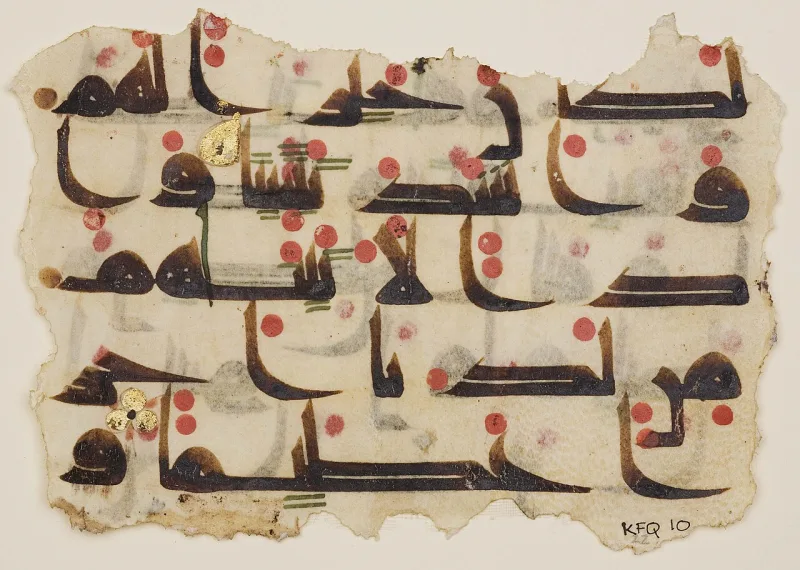
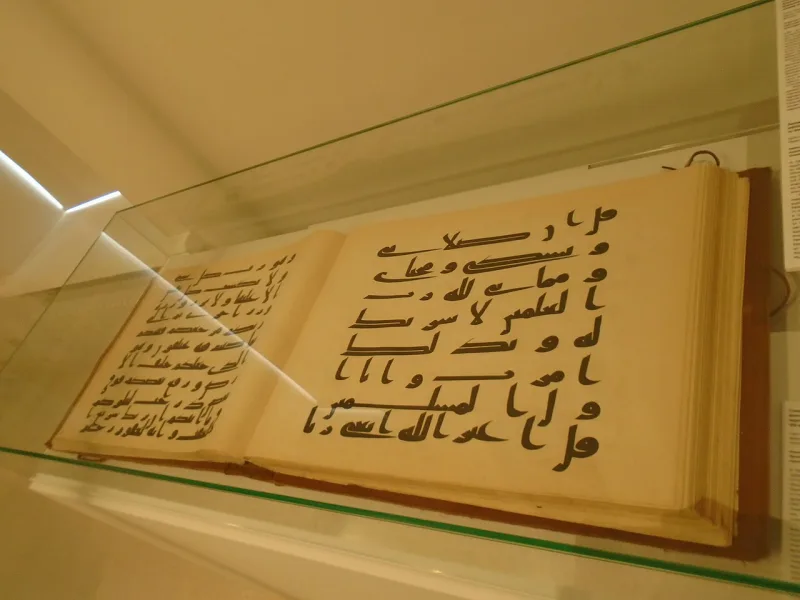
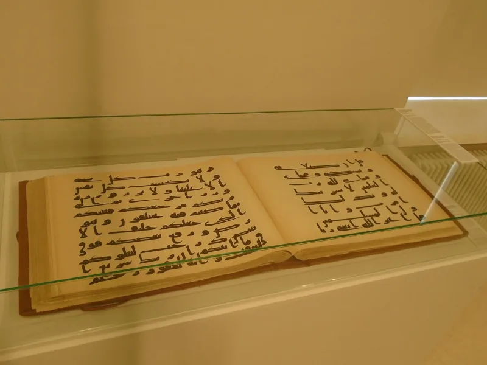

The facts sit in Islam's own trusted sources. You can make this point from their books alone.
Sahih al-Bukhari 4987 records the crisis. Muslims differed in their recitation.
Hudhayfa feared they would split "as Jews and Christians differed." Uthman had one version copied. He then ordered every other Quranic text burnt, "whether fragmentary manuscripts or whole copies."
Ibn Mas'ud's codex reportedly lacked Surahs 1, 113 and 114. Ubayy's held two extra.
Aisha and Hafsa both had Quran 2:238 with the added words "and the asr prayer" (Sahih Muslim 629; Sahih al-Bukhari 5005).
Two reading traditions are printed today. Hafs is used by most of the world.
Warsh is used in North and West Africa. They differ in hundreds of places.
Some differences change meaning, such as Quran 3:146. The Sanaa palimpsest shows a text form from before Uthman.
Daniel Brubaker has documented thousands of physical corrections in early manuscripts.
Al-Azami and Islamic Awareness answer this seriously. The Quran came in seven ahruf, all revealed.
Uthman removed no revelation; he united the community on one mode to prevent a split, with the companions' agreement. The canonical readings go back to the Prophet by mass transmission.
Companion codices were personal copies with notes, not rival Qurans. IRCICA's reply to Brubaker, by Altikulac, says the corrections are ordinary scribal fixes toward the standard.
And the Birmingham and Tübingen manuscripts match today's text closely.
They admit the facts themselves. The burning, the differing codices, the two printed texts — all of it comes from Sahih hadith, the qira'at literature and print editions you can buy.
Be fair: early Qurans after Uthman are remarkably stable. But what was preserved is the Uthmanic version, reached by destroying the evidence of what else there was.
"Which of the ten readings is the one God sent down? I ask that honestly, not to score a point."



They say the readings are all revealed, and Uthman removed no revelation.
Al-Azami, Islamic Awareness and the IRCICA reply by Altikulac answer as follows. The Quran came down in seven ahruf, or modes, all revealed. Uthman took away no revelation. He united Muslims on one mode to stop a split, and the Companions all agreed.
The accepted readings, Hafs and Warsh among them, run back to the Prophet through crowds. They are dialect and allowed range, not corruption. Almost none touch doctrine. Companion codices were private copies with notes in the margins, not rival Qurans.
Brubaker's corrections are plain scribal fixes toward the standard text. That shows tight control. And the early copies dated by radiocarbon, at Birmingham and Tübingen, match today's text very closely. No other old book is this stable.
Strong for you: they grant the burning and the two printed texts.
The facts are not in dispute. There was a mass burning of variant codices by state order. Companion codices differed in wording, and in the count of surahs by early sources. Wives of the Prophet attested different wording for 2:238. And two materially different texts are printed today. All of that comes from Sahih hadith, from the classical qira'at literature, and from editions anyone can buy.
What is contested is only the meaning: divinely allowed modes, or plurality put down. Fairness requires naming the steelman's real strength, since early Qurans after Uthman are remarkably stable. But perfect preservation of one exact text is refuted by Islam's own canon. What was preserved is the Uthmanic version, reached by destroying the evidence of what else there was.